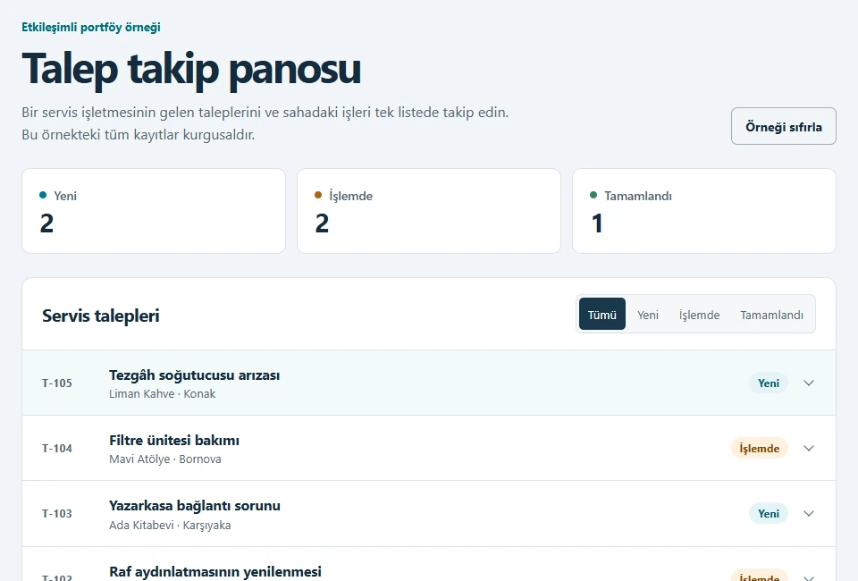
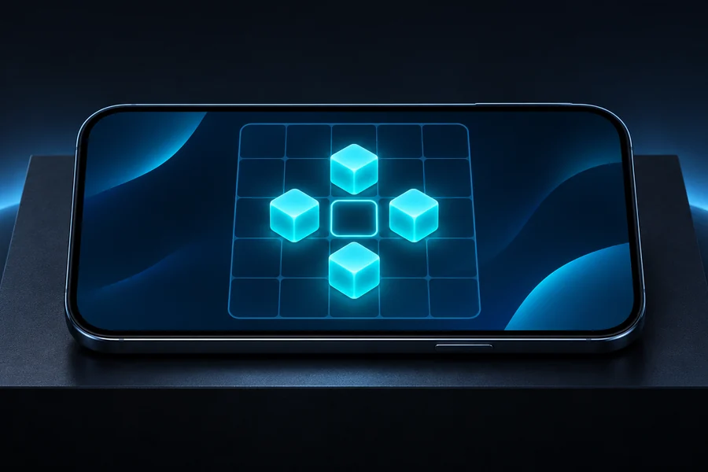

Etkileşimli demo
Talep takip panosu
Bir servis ekibine gelen talepleri tek listede toplayan örnek uygulama. Bir kaydın durumunu değiştirip açık işlerin sayısına etkisini görebilirsiniz.
Bağımsız yazılım geliştirme İzmir
Siparişleri, müşteri taleplerini ve ekip işlerini tek ekrandan takip etmek isteyen küçük işletmeler için yazılım geliştiriyorum.

Portföy
Etkileşimli demo
Bir servis ekibine gelen talepleri tek listede toplayan örnek uygulama. Bir kaydın durumunu değiştirip açık işlerin sayısına etkisini görebilirsiniz.
Web sitesi
Bir kliniği telefondan araştıran ziyaretçi için hekim profili, hizmetler ve randevu bağlantısını bir araya getiren web çalışması.
Kişisel proje
Hesabına erişemeyen kullanıcıların yaşadıkları sorunu seçip ilgili platformun resmî yardım sayfasına ulaşabildiği Türkçe rehber.
İhtiyacınıza uygun alanı seçerek teklif taslağını o hizmetle başlatabilirsiniz.

Proje süreci
Örneğin, randevuları bugün üç ayrı dosyada tutuyorsanız önce bir randevunun nasıl açılıp kapandığını konuşalım. İlk sürümün kapsamını bu iş üzerinden çıkarabiliriz.
Hedef kullanıcıyı, çözmek istediğiniz sorunu ve ilk sürümde gerekli gördüğünüz özellikleri birkaç cümleyle anlatmanız yeterli. Varsa ekran taslağı veya örnek bağlantı da paylaşabilirsiniz.
Ekranlar, kullanıcı rolleri, geliştirilecek iş akışları, entegrasyonlar ve yayınlama ihtiyaçları üzerinden kapsam çıkarılır. Fiyat ve süre bu kapsam netleşince değerlendirilir.
Tarayıcı üzerinden hızlı erişim önemliyse web uygulamasıyla başlayabilirsiniz. Kamera, bildirim veya çevrimdışı kullanım gibi cihaz özellikleri öncelikliyse mobil uygulama değerlendirilebilir.
İlgili sistemin API’si veya desteklediği veri aktarım biçimi incelenir. Entegrasyonun kapsamı, erişim izinleri ve paylaşılacak veriler birlikte belirlenir.
İlk prototip temel kontrolü, oyun döngüsünü ve bir örnek bölümü içerebilir. Oynanış testinden sonra içerik ve seviye sayısı belirlenir.
Önce yaş grubu ve öğrenme hedefi seçilir. Ardından hedefe uygun görevler, geri bildirim ve ilerleme biçimi tasarlanır.
Düzenli tekrarlanan, girdisi ve beklenen çıktısı belli işler iyi başlangıç noktalarıdır. Örnek olarak dosya sınıflandırma, rapor hazırlama ve sistemler arası veri aktarımı değerlendirilebilir.
Belge türleri, erişim izinleri ve cevapların hangi kaynaklara dayanacağı belirlenerek bir prototip hazırlanabilir. İlk sürüm örnek sorularla değerlendirilir.
Tanıtım sitesi hizmet ve iletişim bilgileri sunar. E-ticaret projesinde ürün kataloğu, sepet, ödeme ve sipariş takibi de kapsama girer.
Ürün verisinin dışa aktarılabilirliği, görseller ve varyantlar kontrol edilir. Uygun bir aktarım yolu varsa önce küçük bir ürün grubuyla denenir.
Uygulamayı ve yaşadığınız sorunu seçin. Önerilen ilk adımları ve resmî yardım bağlantısını görün.
İletişim
Bilgisayar Mühendisi
Regnum Towers, Bayraklı / İzmir GitHub’da çalışmalarım